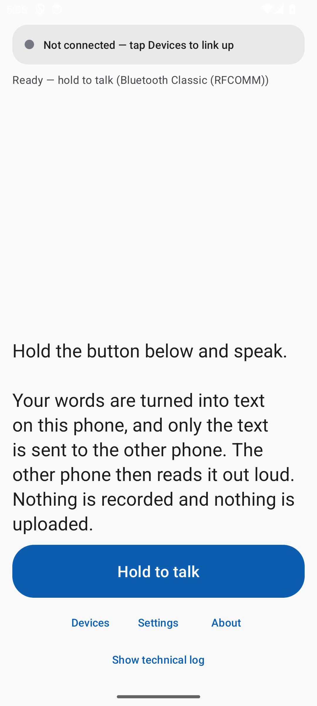
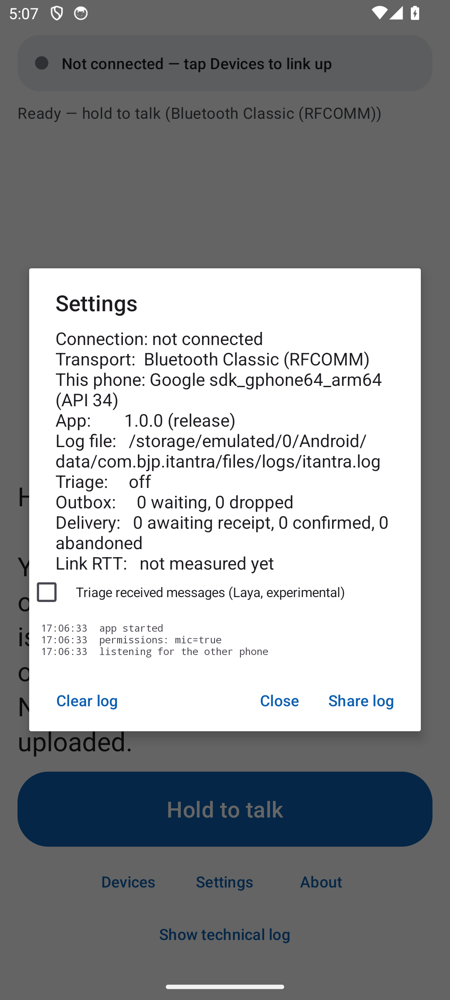
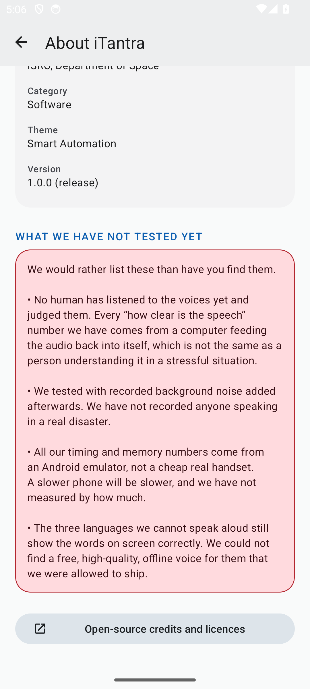
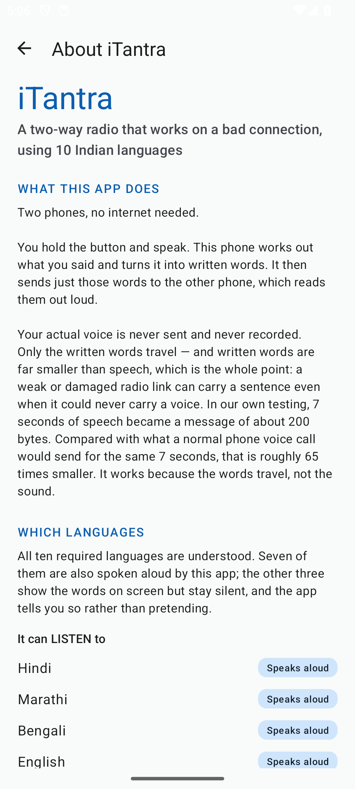

Voice is too data-heavy for a low-bitrate link, but in a distress scenario voice reaches everyone — literate or not. iTantra recognises speech on the phone, sends only the recognised text, and speaks it out on the other phone. On-device ASR runs offline in 10 Indian languages; a message travels as a 49–315-byte packet over Bluetooth or Wi-Fi Direct — around 65× smaller than the same speech as audio. A delivery layer — ACKed outbox, receipts, heartbeats, alert escalation, kill survival — keeps every message whole when the link drops. Mean character error rate 0.0918 over 2,000 clips; the two-phone loop has run on physical phones.
- On-device speech recognition is accurate enough to replace the cloud in an emergency workflow.
- Text is a viable wire format: a few hundred bytes per sentence survive a low-bitrate link that audio cannot.
- Pruning the model’s output vocabulary to the ten required scripts eliminates cross-script noise — the model cannot emit off-script characters.
- Deterministic delivery — ACKed outbox, receipts, ordered resends — makes a lossy link behave predictably; alerts must preempt normal speech.
- A killed app can resume pending messages from disk with no silent loss.
- Low-RAM phones can host a 349 MB model if idle memory is returned under pressure.




Problem statement SIH26173 asks for a TTS & STT aided neural transceiver radio for low-bitrate links (ISRO, Department of Space). In floods, disasters and remote posts, the radio link is weak and intermittent — exactly when a message must get through. Voice is the natural interface, but raw or even compressed voice overwhelms a damaged link and dies on packet loss; cloud speech services need internet, which is absent by definition.
Our approach inverts the stack: speech is recognised offline on the sender phone, and only text crosses the radio. Text is compact, orderable and acknowledgeable, so the link can drop and recover without losing the message; the receiver synthesises it aloud. No cloud, no accounts — the app never requests the INTERNET permission.
Rationale (high level): only text crosses the link — ~7 s of speech ≈ 200 B, about 65× smaller than a voice call. Reliability is treated as a delivery problem, not a radio problem: every segment is ACKed or resent (3/6/12 s → 15 s backoff, max 10 tries); 4 s heartbeats; a peer is declared gone at 12 s. One shipped configuration for every run: arm64-v8a, minSdk 23, a 1,002-token pruned vocabulary, and 96 unit tests on every build.
| Run | Configuration — test set | Result |
|---|---|---|
| A — baseline | ASR v1, 10,288-token vocabulary — FLEURS clean, 2,000 clips | Mean CER 0.0992 |
| B | ASR v2 — FLEURS clean, 2,000 clips | Mean CER 0.0934 |
| C — shipped | ASR v3, pruned 10,288 → 1,002 tokens — FLEURS clean, 2,000 clips | Mean CER 0.0918; zero out-of-script characters |
| D | C, pink noise @ 15 dB SNR — Hindi clips | Script retention 40% → 78% |
| E | C, noise @ 0 dB SNR — Tamil clips | 44% retention — weakest case, declared |
| F — device | Shipped build, on-device self-tests — Android 34, arm64 | 3 self-tests green; ASR RTF 0.156; TTS RTF 0.078 |
| Component | Size / spec | Role |
|---|---|---|
| Offline ASR — Omnilingual CTC, int8, pruned vocabulary | 349 MB | speech → text, 10 languages |
| VAD — Silero | 0.63 MB | segmentation; end-of-speech flush |
| Neural TTS — Piper voices (hi, mr, bn, ta, te, ml, en) | ≈60 MB per voice | text → speech, 7 of 10 languages |
| Wire format — JSON envelope (id, lang, ttl, type) | 49–315 B | the radio payload |
| Transport — Bluetooth RFCOMM; Wi-Fi Direct fallback | 2 Mbit/s class | link layer |
| Delivery layer — ACKed outbox, receipts, ledger, PendingStore | temp-file + rename | order, dedupe, kill survival |
| Optional triage — Laya int8, off by default | 143 MB | destructive-language → priority alert |
Shipped v1.0.0: a 993 MB signed APK, Android 6+, arm64, zero network permissions. Measured: mean CER 0.0918 across 2,000 FLEURS clips (10 languages, 6.7 h); zero out-of-script characters; Hindi script retention under pink noise 40% → 78%; the script filter drops foreign-script segments whole, 25/25 cases; Hindi TTS round-trip CER 0.339 → 0.102. On-device: ASR RTF 0.12–0.16, TTS RTF 0.055–0.08 → ≈1 s mouth-to-ear; 428 MB PSS with the model resident.
96 unit tests and three on-device self-tests pass; the two-phone loop ran end-to-end on physical phones (27 Sep 2026). Conclusion: a text-first neural transceiver makes voice serviceable over low-bitrate, unreliable links — fully offline, on commodity phones.
- Human listening panel and field trials — the noise sets are synthetic; real field audio is the next measurement.
- Real low-end phone numbers: latency, RAM and battery on a budget handset.
- Neural voices for the remaining three languages (Gujarati, Kannada, Odia — text-only today); Tamil robustness at 0 dB.
- Language identification, to separate Hindi/Marathi and Bengali/Assamese.
- Foreground service for very long holds; smaller APK.